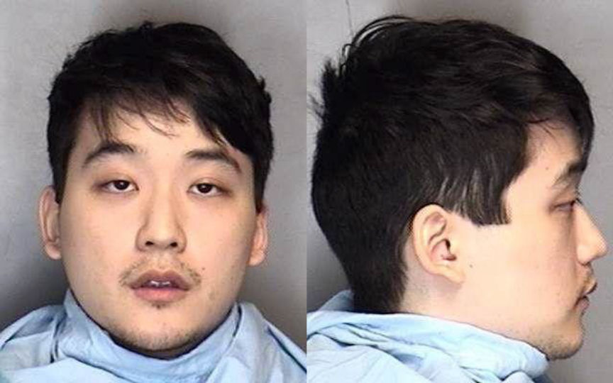
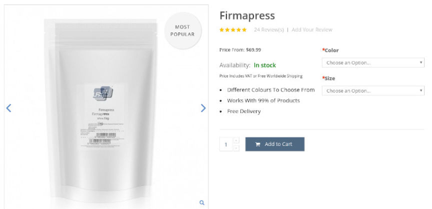
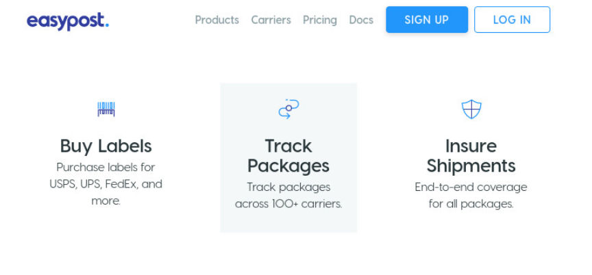
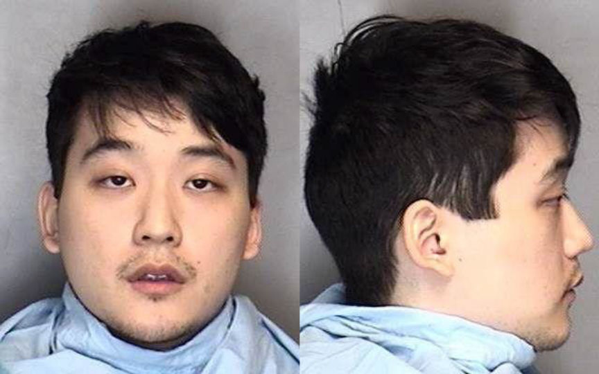
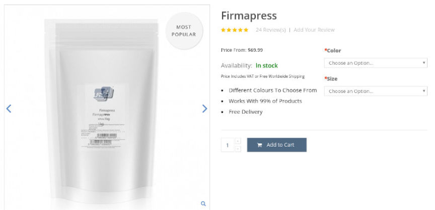
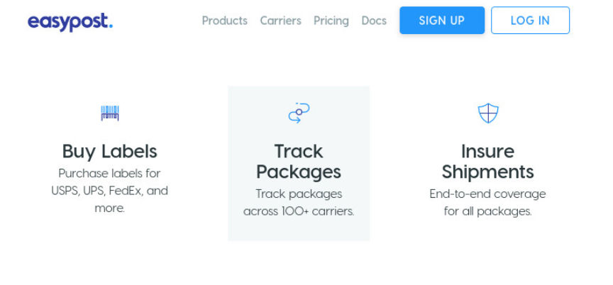

Convicted Xanax Vendor "Lost" Keys to Cryptocurrency Wallets
~4 min read | Published on 2019-09-01, tagged Darkweb-Vendor using 812 words.
Googleplex, a manufacturer and distributor of counterfeit alprazolam pills (Xanax), told the court he did not know how to access his cryptocurrency wallets. According to the court, the vendor has repeatedly refused to help the government recover the assets stored in at least ten cryptocurrency wallets.
After initially deciding to fight nine drug trafficking and money laundering charges in a jury trial, Stephan Caamano, 23, of Champaign, Illinois, changed his mind and pleaded guilty to seven charges. The government is seeking a forfeiture of more than $2 million in the form of a number assets, including $45,000 in cash, a vehicle, Ethereum, Neo, and many other forms of cryptocurreny. The government calculated the total financial judgement through an interesting investigation into the sources of materials used by Caamano during his operation.
Caamano, as the court learned, manufactured counterfeit Xanax pills using pill presses, binding agents, and pure alprazolam—the active ingredient in Xanax. He distributed these pills to buyers through darkweb markets and Reddit messages. In fact, one of his most prolific customers only purchased from Caamano (aka Googleplex) through Reddit.
Financial Judgement
DEA Special Agent Todd Emery wrote that investigators learned that Caamano had purchased his binding agents and related materials from a company called LFA Machines. On its website, LFA Machines describes Firmapress [the binding agent Caamano used] as “an all in one binding, flowing, lubricant and filling agent.” Investigators pulled payment records from Paypal, Stripe, a Navy Federal Credit Union, and customer data from LFA Machines. They learned that Caamano had purchased a total of 1,350 kg of Firmpress. Between 50 kg and 150 kg every month or every other month.
DEA analysts weighed more than 80,000 counterfeit Xanax pills the DEA had seized during the investigation into Caamano. They determined that the vendor had used 313 mg of Firmapress per pill. A single 313 mg pill would have contained approximately 300 mg of Firmapress, 2 mg of alprazolam, and 11 mg of miscellaneous contents.
“Based on Caamano using at least 1,300 kg of Firmapress, and based on each pill having approximately 300 mg of Firmapress, a conservative estimate of the number of pills that Caamano manufactured and sold is 4,333,333 pills,” the special agent wrote.
Additional factors played into this figure, such as the timing between seized packages and purchases of Firmapress. Many of Caamano’s packages never reached their destination due to incorrectly addressed shipping labels. This resulted in a number of strangers receiving packages of Xanax. Those strangers turned the packages over to the police. The police then alerted the DEA. This helped the DEA build a profile of the packages Googleplex mailed to his customers. They learned that Caamano had been using Easypost to purchase and print his shipping labels. They associated an Easypost account number with Googleplex packages, making interception even simpler. One such seizure involved four boxes of counterfeit Xanax pills with more than 80,000 pills in total.
Law enforcement officials interviewed an individual believed to have been Caamano’s largest customer. That customer purchased approximately 1,600,000 pills from Caamano at a price of $.30 per pill. That customer stated that 1,000,000 of those pills were supplied by Caamano during July of 2017. The July 2017 timeframe corresponds with Caamano purchasing 300 kg. of Firmapress - his largest purchase in such a short window of time.

Darkweb vendors frequently use postage services such as Easypost (through Bitcoinpostage.info) or Encidia (through Stampnik) and law enforcement is aware of the popularity these services among drug dealers.
The investigators learned that Caamano charged $0.60 per pill in all other transactions. This information contributed to the “conservative estimate” of Caamano’s total proceeds recorded as $2,119,999.80—a figure represented as: (1,600,000 x $.30) + (2,733,333 x $.60).
The Wallets
Caamano maintained numerous cryptocurrency wallets. Authorities accessed two of those wallets. One contained 64,551.109 Ark and the other contained 1,036 Neo. The government provided a list of inaccessible wallets
The above wallets are essentially worthless without the ability to access them. Given that Caamano does not contest the forfeiture of these wallets, the Government asked for his cooperation in obtaining the private keys. However, no such cooperation has been forthcoming.
Caamano has apparently been less than helpful to the government in accessing the coins. He gave several reasons as to why the he could not help the government access them, including that he had lost the keys; that he simply did not know how; and that he did not have the equipment needed to access the wallets.
In a Motion for a Preliminary Order of Forfeiture, the government asked the court to compel Caamano to turn over his private keys or otherwise provide the government with the means to repatriate the coins.
Failure to comply would result in a harsher sentence under the federal sentencing guidelines for obstruction of justice as well as contempt of court.
After initially deciding to fight nine drug trafficking and money laundering charges in a jury trial, Stephan Caamano, 23, of Champaign, Illinois, changed his mind and pleaded guilty to seven charges. The government is seeking a forfeiture of more than $2 million in the form of a number assets, including $45,000 in cash, a vehicle, Ethereum, Neo, and many other forms of cryptocurreny. The government calculated the total financial judgement through an interesting investigation into the sources of materials used by Caamano during his operation.
Caamano's Mugshot
Caamano, as the court learned, manufactured counterfeit Xanax pills using pill presses, binding agents, and pure alprazolam—the active ingredient in Xanax. He distributed these pills to buyers through darkweb markets and Reddit messages. In fact, one of his most prolific customers only purchased from Caamano (aka Googleplex) through Reddit.
Financial Judgement
DEA Special Agent Todd Emery wrote that investigators learned that Caamano had purchased his binding agents and related materials from a company called LFA Machines. On its website, LFA Machines describes Firmapress [the binding agent Caamano used] as “an all in one binding, flowing, lubricant and filling agent.” Investigators pulled payment records from Paypal, Stripe, a Navy Federal Credit Union, and customer data from LFA Machines. They learned that Caamano had purchased a total of 1,350 kg of Firmpress. Between 50 kg and 150 kg every month or every other month.
The Firmapress Listing from LFA Machines Site
DEA analysts weighed more than 80,000 counterfeit Xanax pills the DEA had seized during the investigation into Caamano. They determined that the vendor had used 313 mg of Firmapress per pill. A single 313 mg pill would have contained approximately 300 mg of Firmapress, 2 mg of alprazolam, and 11 mg of miscellaneous contents.
“Based on Caamano using at least 1,300 kg of Firmapress, and based on each pill having approximately 300 mg of Firmapress, a conservative estimate of the number of pills that Caamano manufactured and sold is 4,333,333 pills,” the special agent wrote.
Additional factors played into this figure, such as the timing between seized packages and purchases of Firmapress. Many of Caamano’s packages never reached their destination due to incorrectly addressed shipping labels. This resulted in a number of strangers receiving packages of Xanax. Those strangers turned the packages over to the police. The police then alerted the DEA. This helped the DEA build a profile of the packages Googleplex mailed to his customers. They learned that Caamano had been using Easypost to purchase and print his shipping labels. They associated an Easypost account number with Googleplex packages, making interception even simpler. One such seizure involved four boxes of counterfeit Xanax pills with more than 80,000 pills in total.
Law enforcement officials interviewed an individual believed to have been Caamano’s largest customer. That customer purchased approximately 1,600,000 pills from Caamano at a price of $.30 per pill. That customer stated that 1,000,000 of those pills were supplied by Caamano during July of 2017. The July 2017 timeframe corresponds with Caamano purchasing 300 kg. of Firmapress - his largest purchase in such a short window of time.

The Easypost Homepage
Darkweb vendors frequently use postage services such as Easypost (through Bitcoinpostage.info) or Encidia (through Stampnik) and law enforcement is aware of the popularity these services among drug dealers.
The investigators learned that Caamano charged $0.60 per pill in all other transactions. This information contributed to the “conservative estimate” of Caamano’s total proceeds recorded as $2,119,999.80—a figure represented as: (1,600,000 x $.30) + (2,733,333 x $.60).
The Wallets
Caamano maintained numerous cryptocurrency wallets. Authorities accessed two of those wallets. One contained 64,551.109 Ark and the other contained 1,036 Neo. The government provided a list of inaccessible wallets
| First Four Digits of Wallet | Contents in Coins/Tokens |
|---|---|
| 0xc4 | .987 |
| 0x10 | 1,373,525 |
| 0xa0 | 350.7645889 |
| 49Vh | unknown |
| C4ad | unknown |
| 1019 | unknown |
| 4KCN (ending with EUhw) | unknown |
| 4KCN (ending with jKuY) | unknown |
| Xrb_ | 14,423.53 |
| NdLb | 4,551.856074 |
The above wallets are essentially worthless without the ability to access them. Given that Caamano does not contest the forfeiture of these wallets, the Government asked for his cooperation in obtaining the private keys. However, no such cooperation has been forthcoming.
Caamano has apparently been less than helpful to the government in accessing the coins. He gave several reasons as to why the he could not help the government access them, including that he had lost the keys; that he simply did not know how; and that he did not have the equipment needed to access the wallets.
In a Motion for a Preliminary Order of Forfeiture, the government asked the court to compel Caamano to turn over his private keys or otherwise provide the government with the means to repatriate the coins.
Failure to comply would result in a harsher sentence under the federal sentencing guidelines for obstruction of justice as well as contempt of court.